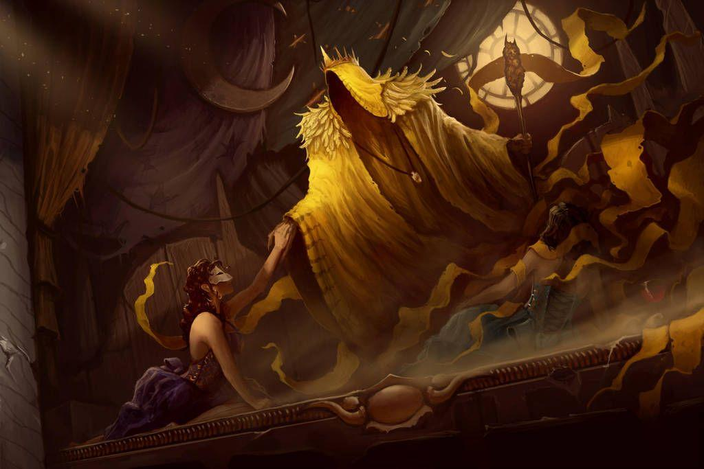
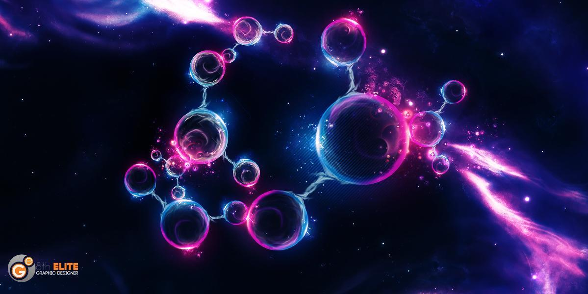

Dark Matter: F.A.Q., Achievements and Ultimatums
August 2021 - Final Release
This document contains rules clarifications and frequently asked questions, as well as an achievement list and ultimatums for the fan made Dark Matter Campaign for Arkham Horror: The Card Game. Only refer to this document if you are truly unsure of what should happen in a situation.
Are we allowed to peak at the icons remaining on cards in the scanning deck?
To avoid spoilers or meta-gaming, it would be better to not peak. But there is no explicit rules that prevent you from doing so if you would like to do it. The scanning back of top card of the scanning deck is also always meant to be visible.
Objectives on non-act cards
The "" instruction may appear on non-act cards in this campaign. They behave and are triggered as if they were on an act card.
Scenario I: The Tatterdemalion
What happens when you are entering the Ventilation Shaft from a forced effect (i.e. the Dream-Gate), but fail the test?
Choose another revealed location to move into instead. If there are no other valid options,
How does UPL-A21 work? Can an investigator without AI cards engage it?
The condition on UPL-A21 only matters for the purposes of the enemy's own movement and automatic engagement. You are allowed to manually engage it even if you do not have AI cards, similarly to aloof enemies.
For the Heir to Carcosa, does having 0 mental trauma count as having the least for the purposes of the effect?
The intention is that each investigator needs at least 1 mental trauma for an investigator to gain the additional experience.
How does Act 3a - Reconnected work?
An investigator at the Cryosleep Quarters must activate a scan ability with the corresponding icon to advance. You must fully resolve the scan before advancing. Note that the act itself does not have a scan ability, so you must find another way to scan for a matching icon.
Scenario II: Electric Nightmare
How do you deal with the Boogeyman?
Since it cannot be evaded, you may want to spend clues efficiently and figure out how to abuse the location-switching mechanic to your advantage. As a last resort, you may want to use Maja's ability.
Scenario IIIa: Lost Quantum
The Hounds of Tindalos
Is this real?
Yes, the Hound of Tindalos enemies are real and its abilities behave as written.
Okay, but what does it mean when it's considered to be engaged with me?
It is treated as if it were a Massive enemy at your location, so, if you have an odd number of cards in your hand, you will provoke attacks of opportunity and will be able to fight or evade it as if it were engaged with you. If you do not have an odd number of cards in your hand, you can't do much about it.
Does it attack all investigators that it is considered engaged with?
Yes, because it is Massive it will attack each investigator it is considered engaged with during the enemy phase, so all investigators with an odd number of cards in their hand.
Okay, but that's not even the complicated part. Odd number of cards? What happens if you attack it while you have an odd number of cards, but commit a card during the attack. Even worse, what happens if you play a Fight event?
In general cases, all that matters is that you are able to attack the Hound when you initiate your action / effect / ability. So in the example of attacking with a Fight event, that is possible, as long as you had an odd number of cards when you are about to play the Fight event. Note that it will still Retaliate even if you have an even number of cards now, since it is a response to your attack.

In Space, No One Can Hear You Scream
“He mentioned the establishment of the Dynasty in Carcosa, the
lakes which connected Hastur, Aldebaran, and the mystery of the
Hyades. He spoke of Cassilda and Camilla, and sounded the
cloudy depths of Demhe and the Lake of Hali.”
– Robert W. Chambers, “The Repairer of Reputations”
It is 2147, and you have just woken up from cryo-sleep in a seemingly abandoned space ship - and from there on you are thrown into a deep space adventure across the solar system to prevent the extinction of the human race. Based on Call of Cthulhu supplements Ripples from Carcosa by Oscar Rios and the End Time by Dr. Michael C. LaBossiere, Dark Matter is an 8 scenario campaign for Arkham Horror: The Card Game for 1-4 players.
What happens if a fail an attack against a Hound that I am not engaged with? Will it hit every other investigator that is considered engaged with it?
No, since it is Massive, and part of the rules for Massive ignores this aspect of attacks.
Non-Hounds Questions
Are face-down encounter cards in play?
No - but other cards may reference it.
Are we allowed to keep track of which face-down encounter card is which?
As long as you are not asked to shuffle them - yes. But in practice, It doesn't make that big of a difference.
How does Quantum Collapse work?
When you draw Quantum Collapse, check if you have any face-down cards in your threat area. If you do, draw all of them, one at a time. If you don't, put Quantum Collapse face-down in your threat area. Additionally, if you drew it from your threat area, take 1 horror too. If you drew Quantum Collapse from your threat area and it was the only face-down card you have, you immediately put it back because of its revelation effect.
How does the Agenda deck work?
The agenda deck is a randomized set of 3 agendas. Whenever you advance it, read and resolve the top ability. Then, set it aside. If that was the last agenda, add 1 Impending Doom and shuffle all the set aside agendas together again to create the new agenda deck that you will use from now on. So, in practice, after you "finish" the agenda deck, you "reset" it and start over with an agenda deck composed of the same 3 agendas, randomly shuffled.
Is there a map for the locations?
It's not possible to place the locations on a flat plane without intersecting connections. You'll just have to try to not get lost!
Scenario IIIb - In the Shadow of Earth
When checking for imitations in act2b or in the resolution, do you reveal the chaos tokens all at once, or one at a time?
You will need to reveal chaos tokens one at a time, returning the revealed token to the bag each time.
Scenario IIIC - Strange Moons
Can the Mi-Go Scientist stay at the same location when moving from his Patrol keyword?
No, the Mi-Go Scientist must move during the enemy phase to a connecting location if it is not exhausted.
How does "Cannot be disengaged" interact with abilities that disengage from enemies.
Cannot is absolute, so you must fulfill as must of that ability as possible without disengaging from the enemy. If you are Luke, you cannot use the Gate-Box. If you draw Detached from Reality, the enemy is defeated from the paradox.
When testing combinations of the same skill such as ( + ), do the skill icons committed get counted twice?
No, they do not. In the example, each icon committed would only increase your skill value by 1.
Scenario IV - The Machine in Yellow
How does "Cannot be disengaged" interact with abilities that disengage from enemies.
Cannot is absolute, so you must fulfill as must of that ability as possible without disengaging from the enemy. If you are Luke, you cannot use the Gate-Box. If you draw Detached from Reality, the enemy is defeated from the paradox.
For the Your Other Self enemy, who spends the clue to prevent the damage for its Forced ability?
It is the investigator who deals the damage that must spend the clues to cancel the damage. (They must have enough knowledge to figure out which one is the real you!)
Scenario V - Fragment of Carcosa
My brain is dying. Why would you do this Axolotl?
I am so sorry.
How do you get the Abjuration of the Throne?
It is possible by the current rules of the game. (Hint: You'll need to rethink what you have done in a different perspective.)


The Dark Matter campaign requires the The Path to Carcosa deluxe expansion in order to play it. For the best experience, it is highly recommended that you have completed The Path to Carcosa before playing the Dark Matter campaign.
The cards in this expansion can be identified by this symbol before each card’s collector number.
To set up the Dark Matter campaign, perform the following steps in order.
1. Choose investigator(s).
2. Each investigator assembles his or her investigator deck.
3. Choose difficulty level.
4. Assemble the campaign chaos bag.
Easy (I want to go to the Moon):
+1, +1 ,0, 0, 0, -1, -1, -2, -2, , , , , , .
Standard (I want to go to Mars):
+1, 0, 0, -1, -1, -1, -2, -2, -3, -4, , , , , , .
Hard (I want interstellar travel):
0, 0, 0, -1, -1, -2, -2, -3, -3, -4, -5, , , , , , .
Expert (I want to go where no one has ever gone before):
0, -1, -2, -2, -3, -3, -4, -4, -5, -6, -8, , , , , , .
Additional Rules & Clarifications
Some encounter cards in this campaign will have icons indicated on the bottom of the card when they are face down. These encounter cards will be used to form the "scanning deck", an out of play deck of cards that will be constructed during the setup of some scenarios.
In this campaign, abilities identified by the Scan action designator allow investigators to explore your environment. Such abilities are generally used to find story assets, story cards or locations in the scanning deck to help progress within each scenario, and are usually, but not always, initiated using the “activate” action.
Scan abilities instruct you to search for the top card of the scanning deck matching a certain icon. In such cases, look at the icons on the bottom of the top card in the scanning deck. If the top card of the scanning deck has an icon matching the icon you are scanning for, draw that card. This is considered a “successful” scan. If no cards were drawn, the scan is considered to be "unsuccessful".
If the topmost card does not have a matching icon, place it face down next to the scanning deck, and look for a matching icon on the next card of the scanning deck. Repeat this process until a card of the indicated type is drawn. After this action has ended, shuffle each card next to the scanning deck back into the scanning deck.
Scan abilities will usually, but not always, refer to the icon of a location. The icon of a location is the connection symbol that is located in the top left corner of the card.
If such a situation arises that you would need to discard a card with the scanning back or shuffle it into any other deck, shuffle it back into the scanning deck instead.
Can a Starship attach to another Starship?
Yep. The ships are docked to each other!
This F.A.Q. is ongoing, and will continue to be updated even after the campaign's final release is finished. If you have any feedback or questions, feel free to let me know! I can be found on Discord at Axolotl#4672.
The following is a list of achievements you may strive toward as you play Dark Matter. As you complete each of these achievements, check the box next to them. Try to complete all of them for the ultimate challenge!
? Untattered: Complete The Tatterdemalion with no cards left in
the scanning deck.
? Airlock Sequence: Defeat three enemies using the ability on
Escape Pod Bay in The Tatterdemalion.
? Mental Fortitude: Defeat the Shadow of Thoughts in Electric
Nightmare.
? Brain Burn: Defeat the Boogeyman in Electric Nightmare
while spending fewer than 6 clues during the scenario.
? Out of Time: Defeat all three copies of Hound of Tindalos in
Lost Quantum.
? Savior of Nostalgia: Save 5 or more Crew story assets and
defeat the Entity in In the Shadow of Earth.
? Neuroscientist: Complete Strange Moons with no cards left in
the scanning deck and no damage on any Brain story asset.
? Self Help: Defeat all copies of Your Other Self without
spending clues during the last act of The Machine in Yellow.
? Endtimes: Win the Dark Matter campaign with 4 tokens, 3
tokens, and no token in the chaos bag at the end.
? It's Too Late: Win the Dark Matter campaign with 12 or more
Impending Doom.
? Line in the Sky: Win the Dark Matter campaign with at least
three Ultimatums active.
? The Heir to Carcosa: Win the Dark Matter campaign on Expert
difficulty by defeating Tassilda in Starfall.
Optional Variant: Ultimatums
The following is an optional variant you can use to add an additional layer of difficulty and excitement to your experience. Before setting up the campaign or a standalone scenario, the investigators may optionally select as many of the following Ultimatums as they wish. Each Ultimatum is a restriction, limitation, or additional rule that makes the game harder. You are not forced to choose any particular Ultimatum, and the choice of which Ultimatum(s) to use must be unanimous among all investigators in the group. Once chosen, all Ultimatums are permanent throughout the duration of the scenario/campaign.
The following is a list of some Ultimatums we’ve designed, but feel free to use these as inspiration to design your own
Ultimatum of the Unspeakable Oath: Each time you speak
the name of HASTUR or TASSILDA aloud during the setup or
play of a scenario, immediately take 1 horror.
Ultimatum of Impending Doom: Begin each scenario with
doom on the agenda equal to the amount of Impending Doom.
Ultimatum of The Feaster: During the setup of each scenario
with a scanning deck, shuffle The Feaster from Afar into the
scanning deck.
Ultimatum of Inevitability: Begin the campaign with 3 tally
marks under Impending Doom.
Ultimatum of the Dark Past: During the setup of each
scenario, if it is not already in the encounter deck, shuffle the
Dark Past encounter set into the encounter deck. During the
resolution of those scenarios, if there is a copy of Reminiscence
in the victory display, you must add a token to the chaos bag.
(if there are already 4 tokens in the bag, each investigator
suffers 1 mental trauma instead.)
Ultimatum of Exploration: Each time you successfully scan,
shuffle the top card of the encounter deck into the scanning
deck. When you scan, encounter cards without a scanning back
are considered to have icons matching any icon. A scan where
you draw an encounter card without a scanning back is
considered an unsuccessful scan.
Ultimatum of Anachronism: As an additional cost to play
unique non-story assets, cross out 1 tally mark from your
"Memories".


Some scenario cards, story resolutions and interludes may refer to your "Memories". Each investigator has a section in the Campaign Log to mark their individual "Memories". These "Memories" are tied to specific investigators, and are not shared among all of the investigators.
You may be instructed to add tally marks or cross out tally marks to specific investigator's "Memories". This is done by marking a line in that investigator's "Memories" section in the Campaign Log, or crossing out one of the above lines, respectively. The number of "Memories" each investigator has is equal to the number of tally marks in their respective sections that have not been crossed out.
Each time an investigator fails a skill test while attempting to evade an enemy with the alert keyword, after applying all results for that skill test, that enemy performs an attack against the evading investigator. An enemy does not exhaust after performing an alert attack. This attack occurs whether the enemy is engaged with the evading investigator or not.
You turn over the folded program in your hand, reading it for what seems like the hundredth time. “Miskatonic Playhouse presents: The King in Yellow,” it reads. “A special one-night engagement at Arkham’s very own Ward Theatre. An irresistible drama in two acts. Production staged and directed by Nigel Engram.” The cast is a small ensemble, with one unattributed credit at the end: “The Stranger.”
To have such a highly anticipated play come to Arkham all the way from Paris is a noteworthy event, even if it is just for one night. For weeks leading up to the show, it was the talk of the town. It seemed so unassuming…and yet, you have evidence something sinister is at work. It started with the disappearance of one of the stagehands at the theatre—a boy of only seventeen who missed rehearsal one night and was never seen again. Then, less than two weeks before the performance, there was the musician whose corpse was found with a gun in its mouth. Perhaps most chilling was the crazed man the coppers had picked up in Independence Square who had been ranting and raving about the “King’s return.” He was brought to Arkham Asylum, and you were surprised to discover that he was not alone in his delusions.
Finding these events suspicious, you and your companions have delved deeper into the matter. Although no connection can be proven, these weren’t the only strange events surrounding the up-and-coming play. Instances of suicide and madness have followed in its wake, and you are determined to discover why.
The lights in the auditorium dim, and a spotlight shines on the stage. What unfolds is not quite what you expected. Slow-paced and monotonous, the first act of The King in Yellow is a tedious bore. The setting and characters are compelling, but the meandering and nonsensical story does little to entertain or inform. You begin to wonder whether the dreadful events surrounding The King in Yellow aren’t connected, after all. Perhaps it was just your overactive imagination; how could such a trivial and unassuming show cause such pandemonium? You are surprised when the first act closes without any rising action or revelation. The lights rise for the intermission, and you consider leaving early, stifling a yawn. Before you are able to decide, however, you find yourself drifting… drifting…to sleep.
Proceed to Scenario I: The Tatterdemalion
Scenario I: The Tatterdemalion
You awaken, entombed in ice. Your skin, your organs, even your bones are cold. You can't move and it's hard to form coherent thoughts... A tingle of warmth slowly spreads through your veins...
When your eyelids finally thaw, all you see is a large pane of frosted glass. What is going on? Where are you? One moment, you were in the Ward Theatre, watching the tedious theatre performance, and the next, in a cryosleep chamber.
Cryosleep... Despite having never heard the word before, you instinctively know what this procedure must be. Your mind may not recollect, but your body has been through this cycle of freezing and thawing many times. The thought of being familiar with something so foreign to you disturbs you to the core.
When the warmth eventually reaches your fingers, the glass window slides open and releases you into a dark, metallic room. The control panel next to your tomb delivers its computerized announcement: "Welcome back aboard the Tatterdemalion. The current star date is April 4, 2147." You look out the nearest window, only to witness a black canvas of infinite stars and a colossal cerulean sphere -- the planet Neptune. The thought of drifting through the infinite expanse of space does not frighten you, for you have lived your entire life in space -- not in your past life in Arkham, but in the person you embody now. As you begin wondering how much stranger this dream of yours can become, a loud blaring alarm echoes through the vacant ship...
Proceed to Setup.
Gather all cards from the following encounter sets: The
Tatterdemalion, Anachronism, and Dark Past. These sets are
indicated by the following icons:
Set aside the Artificial Intelligence encounter set, out of play.
This set is indicated by the following icon:
Set aside the Virtual Access Key story asset, out of play.
Create the scanning deck. This is done by taking all the
encounter cards with icons at the bottom of their back side and
shuffling them together.
Put all remaining locations into play. Each investigator begins
play at the Cryosleep Quarters.
Shuffle the remainder of the encounter cards to form the
encounter deck.
Suggested Location Placement

If no resolution was reached (each investigator resigned or was defeated): Once again you are startled awake, this time by the small, cold hands of a young girl. "It worked! You're here! Please, follow me quickly." You are surprised to find yourself standing in a field of grass. The sky is black and seething, the sun unable to penetrate the dark, rolling storm clouds... You are no longer on the Tatterdemalion, but you don't recognize this place either. Metallic cylinders with red, pulsating lights stand tall in the distance, looming above a small town. Behind you is a large obsidian door.
You ask the little girl about your whereabouts. "You are in a simulated dream. In fact, you are in my dream. Now follow me quickly before the monster eats my friends."
In your Campaign Log, record that you were transported
to the Virtual Dreamlands by Maja.
If an investigator was defeated or resigned with
Cybervirus in their hand, that investigator must record in
the Campaign Log that they have been infected by the
cybervirus.
If at least 1 copy of the Reminiscence treachery is in the
victory display, add 1 token to the chaos bag for the
remainder of the campaign.
Each investigator earns experience equal to the Victory X
value of each card in the victory display.
Proceed to Scenario II: Electric Nightmare.
Resolution 1: You find yourself standing in a field of grass. You are no longer on the Tatterdemalion, but you don't recognize this place either. The sky is black and seething, the sun unable to penetrate the dark, rolling storm clouds. Metallic cylinders with red, pulsating lights stand tall in the distance, looming above a small town.
This system’s pocket dream reality is like nothing you have ever experienced. The colors, textures, sounds, and scents are startlingly realistic. Behind you is a large obsidian door, a virtual gateway to represent your arrival.
You are surprised to see a little girl walking towards you. "You got here just in time! Please, follow me quickly before the monster eats my friends."
In your Campaign Log, record that you entered the
Virtual Dreamlands by your own means.
If an investigator was defeated, resigned, or ended their
game with Cybervirus in their hand, that investigator
must record in the Campaign Log that (your investigator
name) has been infected by the cybervirus.
If at least 1 copy of the Reminiscence treachery is in the
victory display, add 1 token to the chaos bag for the
remainder of the campaign.
Each investigator earns experience equal to the Victory X
value of each card in the victory display.
Proceed to Scenario II: Electric Nightmare.

Scenario II: Electric Nightmare
You struggle to follow the pace of the little girl as she skips and hops towards the small town. "My name is Maja. My directive is to store and manage the information archives on the ship." She hastily explains that a few of her classmates and her were kidnapped from their school by the 'bad people' on January 16th, 2045. Their brains were surgically removed and preserved in a special experimental machine that eventually became the powerful supercomputer operating the Tatterdemalion, K2-PS187.
As you walk through the town, it becomes clear that something horrible has happened here. Everything appears to be in disarray, as if a riot has recently passed through. Freshly-painted yellow graffiti depicting strange symbols and hieroglyphs can be seen. Everywhere are splatters of blood, spent shell casings, and pale face masks. There are no bodies, but you can hear the sound of distant screams, gunshots, and sirens coming from beyond the streets. Nearby is an overturned police car and a black box truck lying on its side. Huge claw marks have torn into the metal of the truck and its rear doors hang open. As you walk past, a radio from within crackles and sputters, then blares, “Hello, Unit 12? Unit 12, is that you? Please respond." Maja clarifies that this virtual environment that represents K2-PS187's dreams takes the form of the day they got captured, the day the entire world ended. What could possibly have happened on Earth in the distant future? Or rather, the distant past?
You finally arrive outside of a large brick building. Maja halts and gestures towards it. "This is where my friends are hiding. The bad people made us translate a scary story and make a movie for them. We didn't want to read it, but they made us. A few days later, Annie, the universal translator, she -- she --" Maja struggles to utter the words. There is a desperate fear in her eyes. "You won't believe me, but I swear, it was the Boogeyman! I saw the Boogeyman eat her! I ran away and searched the archives to see if anything, anyone could help. After a long time, I finally found someone and called out to them. That's when you woke up! Now that you're inside our system, you can save us!"
Before you is a path leading to a pair of double doors, above which are the words “Public School 187.” Underneath, someone has written “HASTUR RISES!” in yellow spray paint. An inhuman howl echoes through the halls inside the school, followed by children screaming in terror.
Check the Campaign Log. Each investigator with 3 or fewer
"Memories" must read Desynchronization.
Proceed to Setup.
An overturned schoolbus gathers dust on the school grounds. As you examine the vandalized windows, you notice a glimpse of your own reflection. However, you no longer recognize the person looking back at you. The frame, the distinct facial features, they all seem so familiar to you, yet you know this is not your body. You stare into the glass in disbelief. The face of your reflection morphs into a blank, pale mask with no mouth, nose or eyes. The virtual reality no longer recognizes your residual self image anymore -- the mental projection of your digital self has decayed into nothingness.
You must add the Desync weakness to your deck. This
card does not count towards your deck limit.

Gather all cards from the following encounter sets: Electric
Nightmare, Endtimes and Dark Past. These sets are indicated by
the following icons:
Set aside the The Boogeyman encounter set, out of play. This set
is indicated by the following icon:
Randomly select one version of act 1 (Public School 187) to put
into play. Remove the other two versions from the game.
Set each copy of Undefined Room locations aside, out of play,
as well as the Entrance Hall (A Shimmer in the Wall).
Put the School Grounds location into play. Each investigator
begins play at the School Grounds.
Attach the Maja story asset to School Grounds.
Set the following story assets aside, out of play: Alma, David,
Tilde, William, and each copy of K2-PS187.
Check your Campaign Log. If an investigator has been infected
by the cybervirus, that investigator must search the collection for
Cybervirus and begin the scenario with it in their hand.
Shuffle the remainder of the encounter cards to form the
encounter deck.
Additional Rules & Clarifications
Locations in the Virtual Dreamlands
During this scenario, locations will be arranged in schematics, depicted by their icons. Locations are adjacent orthogonally (left, right, above, and below), and are not adjacent diagonally.
Throughout this scenario, you may be instructed to switch two locations with each other. When a location is switched with another location, they take each other's place in the arrangement. All tokens, attachments, investigators, enemies, and other cards at each location remain on the same location (they have “moved” with the location -- only the arrangement and connections have changed.)
For example, if Wendy Adams is currently in the School Grounds and is instructed to switch her location with the Entrance Hall, which is directly above the School Grounds, the positions of the two locations will be switched. After switching these two locations with each other, Wendy Adams remains in the School Grounds, now above the Entrance Hall.
An enemy with swarm cards underneath is actually a pack of enemies operating in unison. The enemy that the swarm cards are underneath is called the "host enemy". In this scenario, encounter cards can become swarm cards. When those swarm cards are defeated, they are discarded into the encounter discard pile.
Each swarm card underneath the host enemy acts as a separate
instance of that enemy for most purposes. Each swarm card has
the same values and text as its host card.
Each swarm card attacks separately when enemies attack during
the enemy phase. Once the host enemy and all of its swarm
cards have attacked during this step, exhaust all of them.
Each swarm card can be attacked or dealt damage separately, but
the host enemy cannot be defeated while it still has swarm cards
underneath it. When a swarm card is defeated, any excess
damage may be dealt to another swarm card underneath the
same host enemy or to the host enemy itself.
The host enemy and all of its swarm cards move, engage, and
exhaust as a single entity. (For example, if a host enemy or any
of its swarm cards are evaded, all of them exhaust and become
disengaged.)
If no resolution was reached (each investigator resigned or was defeated) and there are no Reintegrated story cards in the victory display: Proceed to Resolution 1.
If no resolution was reached (each investigator resigned or was defeated) and there is at least 1 Reintegrated story card when the scenario ended: Proceed to Resolution 2.
Resolution 1: A roar of applause startles you awake. The crowd of the theatre rises to their feet, cheering endlessly. Several patrons in the front row are throwing roses to the actors on stage, who are bowing with wide smiles across their faces. A searing headache crawls through your temples. How did you get back here? Were you in the theatre all along? What about the spaceship? The virtual reality? Was it all just a terrible dream? Before you can get up and exit the auditorium, the lights flicker off. A spotlight shines onto the stage, illuminating a single actor, dressed up as a clown. Something must have gone wrong inside the simulation. You are no longer inside of K2-PS187's nightmare, but your own. Without outside interference, your body will likely be drifting in endless space forever, as your mind slowly decays in this rotten reproduction of reality. The stranger begins laughing. A horrible, ear-piercing laugh.
In your Campaign Log, record that you are trapped in a
virtual nightmare.
Each investigator is driven insane.
The investigators lose the campaign.
Resolution 2: You wake up inside of a virtual classroom, surrounded by the children you rescued. The children themselves, who at first appeared dirty and disheveled, now appear clean and neat in school uniforms. They contained the insanity of the remaining children by creating a new pocket reality, disconnected from the system mainframe. The survivors mourn the loss of their friends, but are glad that there is no more Boogeyman to scare them and that there are no more bad people to tell them what to do. The virtual dreamscape is no longer a nightmarish hell it used to be.
In your Campaign Log, record that you partially restored the
sanity of K2-PS187.
Check the number of Reintegrated story cards in the victory
display:
If there is exactly 1: An investigator may choose to add
the K2-PS187 (25% Functionality) permanent story
asset to their deck.
If there are exactly 2: An investigator may choose to add
the K2-PS187 (50% Functionality) permanent story
asset to their deck.
If there are exactly 3: An investigator may choose to add
the K2-PS187 (75% Functionality) permanent story
asset to their deck.
Each investigator earns experience equal to the Victory X
value of each card in the victory display.
If at least 1 copy of the Reminiscence treachery is in the
victory display, add 1 token to the chaos bag for the
remainder of the campaign.
Proceed to Interlude I: Mission Briefing.
Resolution 3: Outside, the sun comes out and it appears to be a beautiful spring day. Inside, the halls are clean and orderly, with brightly painted pictures on the walls. The children themselves, who at first appeared dirty and disheveled, now appear clean and neat in school uniforms. They are overjoyed that the Boogeyman and all the bad people are finally gone. They understand that they can never return home and that their families are long dead. But that does not diminish their happiness that there is no more Boogeyman to scare them and that they have a real teacher to take care of them again. The virtual dreamscape is now filled with happy, loving children.
In your Campaign Log, record that you fully restored the
sanity of K2-PS187.
An investigator may choose to add the K2-PS187 (100%
Functionality) permanent story asset to their deck.
If at least 1 copy of the Reminiscence treachery is in the
victory display, add 1 token to the chaos bag for the
remainder of the campaign.
Each investigator earns experience equal to the Victory X
value of each card in the victory display.
Proceed to Interlude I: Mission Briefing.
Interlude I: Mission Briefing
Check the Campaign Log. If you were transported to the Virtual Dreamlands by Maja, read Mission Briefing I.
Otherwise, skip to Mission Briefing 2.
Mission Briefing I: The virtual dreamscape around you swirls into a flurry of ephemeral blue code and dissipates into complete darkness. You find yourself back inside the Tatterdemalion. A sharp sting hurts you as a mechanical arm unplugs the cyber-cable out of the back of your head. K2-PS187 apologizes for the intrusive method it used to bring you into the virtual dreamlands and is now fully cooperative. The cybernetic supercomputer will help you in any way it can, starting with a summary of the recent events that have unfolded on the Tatterdemalion.
Proceed to Mission Briefing 3
Mission Briefing 2: The virtual dreamscape around you swirls into a flurry of ephemeral blue and dissipates away as you disconnect from the virtual dreamscape and stumble out of the all too familiar cryosleep chamber. K2-PS187 is now fully cooperative and will help you in any way it can. The supercomputer starts by briefing you on the recent events that have unfolded on the Tatterdemalion.
Proceed to Mission Briefing 3
Mission Briefing 3: The crew of Tatterdemalion was composed of worshippers of Hastur, one of the Ancient Ones that has descended upon Earth. The cultists recently undertook a mission to free Tassilda, daughter of Hastur, rumored to be imprisoned on an asteroid codenamed Fragment. The ship managed to rendezvous with Fragment and deployed several survey teams to search the caverns upon it. Before your current mind was implanted, you were one of these cultist explorers, destined to awaken Tassilda.
After a few weeks of survey, one of the teams retrieved a slab of alien hieroglyphs, and ordered K2-PS187 to begin a translation. Another team reported to have found the inner chambers where Tassilda resided and destroyed the imprisoning sigils. They were never heard from again.
You and your fellow cultists swiftly withdrew from the asteroid before the princess of Carcosa could awaken and attack the Tatterdemalion. Content that such were the risks one took worshipping gods of pure chaos, you did not mourn your lost companions. The ship was set to return to the inner solar system. Your mission has been a success. You had finally freed Tassilda, the daughter of Hastur, who might soon be elevated by her father to become a new Ancient One.
While most of the cultists entered cryosleep for the journey home, K2-PS187 was busy analysing the alien runes. When the translation was complete, the computer learned of a story titled "Heir to Carcosa." The knowledge caused it to go insane and slaughter all of the waking crew out of terror. The ship was left in turmoil, drifting without sense through space -- until K2-PS187 brought you back into this world from the archives in a final cry for help.
You now understand what you must do. Although Earth is no longer the home it used to be, humanity still exists, spread out throughout colonies in the solar system, living in fear and in isolation. If the being named Tassilda, Heir to Carcosa, would be exalted by her father, there is no doubt that she will decide to reign over humanity's colonies with the madness of Carcosa. You must atone for your past sins and eliminate the entity before she can be elevated to godhood. Unfortunately, the last recorded positions of Fragment were among the data lost during the initial corruption. However, K2-PS187 was able to retrieve a few leads from the ship's itinerary. You will need to traverse the solar system to locate the coordinates of the asteroid and prevent Tassilda's ascension.
The investigators may choose to watch a simulated performance
of the translated play. If you do so, read Heir to Carcosa.
Proceed to The Search for Fragment.

READ AT YOUR OWN RISK.
The program begins with the royal family of Yhtill cowering before the King in Yellow, Avatar of Hastur. For the next three hours, you witness a horrifying creative work, full of betrayal, intrigue, and horror. The story unfolds thus:
After claiming Yhtill and absorbing it into Carcosa, the King in Yellow took the insane princess Camilla as a consort. Before her death, the princess bore the Ancient One three children, who became fosterlings of Hastur. They were two boys, named Thothut and Tasylock, and a girl named Tassilda. While normal-seeming at first, the children developed many of the physical characteristics and powers of their father. This transformation was viewed by their mother as yet another of Carcosa’s many corruptions. It was the final blow to Camilla’s mind, causing her heart to stop from despair and grief.
For some time the royal trio lived with their sire in Carcosa, evil beings serving loyally at the foot of their father. But soon, like their mother, uncle, and grandmother before them, the princes and princess of Carcosa began to whisper, squabble, and plot. They had dreams of power and succession. Eventually Thothut and Tasylock unwisely moved against their father. Hastur was aware of the plot all along, and easily avoided their traps. In a way too horrible to describe, he destroyed both of his sons.
His daughter Tassilda, who knew of her siblings’ plot but refused to take part in it, was spared. But she had done nothing to warn her father, choosing to wait and see if their plot was successful before committing to a course of action. For her silent betrayal, Tassilda was punished. Her father, He Who Should Not Be Named, sealed her into her home, which the Ancient One tore free of Carcosa and hurled out into space. Her father claimed that in an inevitable time, she will be released, and granted all that she desires.
Record in your Campaign Log that you have watched the
performance of Heir to Carcosa.
Each investigator suffers 1 mental trauma.
If an investigator controls the Heir to Carcosa weakness,
they may add 2 tally marks next to their "Memories".
Aboard the Tatterdemalion, you and your companions seek the coordinates of the asteroid "Fragment" to prevent the ascension of Tassilda, daughter of Hastur. Upon analysing the remaining data aboard the ship, K2-PS187 and you have decided on 3 traces that are worth investigating. However, time is of the essence -- you may want to visit the destination you think will be the most valuable first.
The investigators must choose to follow one of the following traces that have not already been chosen. If you cannot (you have already completed each Scenario III), skip to Interlude II: Introspection.
Trace 1: The last destination of the Tatterdemalion before travelling to Fragment was a research laboratory on a stray asteroid named Elbrus. This specific facility was built to study and experiment with the materials that exhibit quantum-like behaviour. You aren't sure what the cultists were hoping to achieve there, but perhaps these scientists can steer you in the right direction.
Proceed to Scenario IIIa: Lost Quantum. (P. 11)Trace 2: Thorough analysis of the archives has revealed evidence of hacking into the mainframe of an Earth survey vessel named the Nostalgia II, and several references to a "quarantine" and to "trust no one". If you can establish contact with the crew, maybe you can figure out what the cultists were looking for.
Proceed to Scenario IIIb: In the Shadow of Earth. (P. 13)Trace 3: The Tatterdemalion appears to have landed on one of Saturn's moons several times in the past few years. The ship's log record these operations as "negotiations." K2-PS187 notes that this is particularly strange, as there are no known human outposts this far out in the solar system. You could pay a visit to these coordinates to figure out what these "negotiations" consist of.
Proceed to Scenario IIIc: Strange Moons. (P. 16)

Scenario IIIa: Lost Quantum
"When the world ended, the various scientific and mining communities of different nationalities that lie in the asteroid belt between the planets Mars and Jupiter had formed a pact -- a promise to ensure the survival of mankind. [...] The United Colonial Coalition is composed of twenty colonies, varying widely in size, population, and purpose. Some colonies exist solely for mining, while others focus on scientific research or are engineering centers; these usually have fewer than 200 individuals living within them. Other asteroids serve as population centers, containing vast hydroponic farms, universities, and recreational areas. These can be home to more than a thousand colonists..."
-- Maja, Information Archives
When you arrive at the asteroid, you are absorbed by the fuchsia glow of Elbrus. Quantum materials have only recently been discovered, but may hold key properties that could be used to engineer devices that would have been impossible with classical materials. Unfortunately, quantum fields generated by these materials disrupt traditional radio communication, making it impossible for you to hail the scientists on Elbrus. Without further ado, you and your companions board one of the landing crafts and drift towards the asteroid...
The purple aurora spreads over the view port like distant milk, filling the room with an electric tinge. Your final approach vector takes you directly over one of the larger craters on the asteroid. The computer calculates the trajectories, and commences the final descent onto the rocky surface. It is just then that the short-range radios crackle into a man's terrified voice. "Abort the landing procedure now! Abort! Before --" But it is too late. The warning lights begin flashing on and off as the craft spins out of control. You grab onto anything you can, but the vessel increasingly spins and spins until your arms flail and darkness prevails...
Gather all cards from the following encounter sets: Lost
Quantum and Deep Space. These sets are indicated by the
following icons:
Set aside both copies of the Erwin Simmons story asset, out of
play.
Set aside The Feaster from Afar enemy (with a scanning back).
Create the scanning deck. This is done by taking all the
other encounter cards with icons at the bottom of their back
side and shuffling them together.
Search the scanning deck for the Landing Craft location and put
it into play. Each investigator begins play at the Landing Craft.
Randomly shuffle the 3 versions of agenda 1 together to form
the agenda deck.
Shuffle the remainder of the encounter cards to form the
encounter deck.
Additional Rules & Clarifications
Face-Down Encounter Cards
In this scenario, you may be instructed to place encounter cards face-down into your threat area. These cards are considered out-of-play, but may be referenced by other scenario cards.
When you would draw cards from the encounter deck, if both the encounter deck and discard piles are empty, draw a card from the face-down encounter cards in your threat area instead. If there are none in your threat area, you are defeated.
Clues & Locations in the Quantum Realm
In this scenario, locations may leave play and re-enter play at a later time. When a location leaves play, discard all attached cards and clues on it. When a location enters play, regardless of if it has been in play at a previous time, treat it as if you have just revealed it for the first time. As such, a number of clues equal to that location's clue value are placed on that location each time it is revealed (from the token pool).

If no resolution was reached (each investigator resigned or was defeated), and an investigator resigned with the Erwin Simmons story asset under their control: Proceed to Resolution 3.
If no resolution was reached (each investigator resigned or was defeated), and the investigators did not resign with the Erwin Simmons story asset under their control: Proceed to Resolution 1.
Resolution 1: When you finally came back to your senses, you and your companions were inside the Tatterdemalion, and Elbrus appears to have disappeared -- possibly lost in space and time within the quantum realm. You don't remember much of what happened. Despite the initial evidence pointing to the contrary -- proof was eventually found that the ordeal has been real -- shards of the quantum-behaving crystals were discovered in the cargo bay, that you presumably have brought back from Elbrus. Still unsure of why the cultists have come, you prepare for the next destination, which may finally give a few answers rather than pose more questions.
In your Campaign Log, record that the Elbrus Station has
been lost in the quantum realm.
If it is not already written, record in your campaign log
that you have witnessed the primordial chaos.
Each investigator earns experience equal to the Victory X
value of each card in the victory display.
Add 4 tally marks under "Impending Doom" in your
Campaign Log.
Return to Search for Fragment on page 10.
Resolution 2: The physicist is more than grateful for your help. "All this vital research -- thank god you came in time. If you ever need to get something done in the Colonial territories, I'll make sure to put in my good word." With a nod and an awkward handshake, you depart the facility and return to the Tatterdemalion. The cultists have stolen the quantum shards from Elbrus, but for what purpose, you are still unsure.
You look into the ephemeral glow of the crystal shard Erwin has gifted you, wondering about the bizarre circumstances you have found yourself in. However, there's no time to waste on self-reflection -- K2-PS187 awaits your next heading.
In your Campaign Log, record that the Elbrus Station has
been fully stabilized.
Each investigator earns experience equal to the Victory X
value of each card in the victory display.
Add 1 token to the chaos bag for the remainder of the
campaign for catching the eye of the King in Yellow..
Add 1 tally mark under "Impending Doom" in your
Campaign Log.
Return to Search for Fragment on page 10.
Resolution 3: A few moments after you return to the Tatterdemalion, Elbrus implodes in a cacophony of ephemeral haze and pops out of existence. The physicist sighs in relief. "Thank god you came in time. It's a shame about all that research that was lost, but at least everyone is safe. Now please explain to me why we are now in the very ship I remember came to pillage our facility." You brief Erwin on your quest and discuss what purposes the cultists could have had with the quantum shards. The physicist proposes several ideas of quantum weaponry or tools - but none of which makes any sense. Regardless, he is willing to join you on your quest -- out of good will or curiosity, you are unsure. Still unsure of why the cultists have come, you prepare for the next destination, which may finally give a few answers rather than pose more questions.
In your Campaign Log, record that the Elbrus Station has
been lost in the quantum realm.
An investigator may add the Erwin Simmons (Quantum
Physicist) story asset to their deck. This card does not
count towards that investigator's deck limit.
Each investigator earns experience equal to the Victory X
value of each card in the victory display.
Add 2 tally marks under "Impending Doom" in your
Campaign Log.
Return to Search for Fragment on page 10.
Scenario IIIb: In the Shadow of Earth
"In the middle of the 21st century, Earth was in complete chaos. Rioting, crime, madness and worse had become the order of the day for the entire world. [...] In a last ditch of effort, two of the Arks were completed and the third vessel was stripped for parts. The two completed vessels set out for Mars, each carrying 3000 humans in suspended animation. One vessel, the Liberty, suffered a massive power plant failure and the crew and passengers were killed. The other ship, Hope, eventually reached Mars..."
-- Maja, Information Archives
The planet Earth -- what used to be humanity's sanctuary, is now abandoned to the madness of the Ancient Ones. There is very little information of what remains on the Earth, but if anyone would attempt to send out a transmission, survey vessels stationed around the planet such as the Nostalgia II would hear those calls.
The trip itself was uneventful, and you spend your days watching the blue dot of Earth grow and grow in size. Around the time you can finally recognize a few of the continents, the Tatterdemalion picks up a lonely and distant beat -- the echo of the Nostalgia II's distress beacon. You try to hail the crew with your radios, but there is no response. The Tatterdemalion begins its deceleration, and with no time to waste, you prepare to board the godforsaken ship.
Gather all cards from the following encounter sets: In the
Shadow of Earth and Deep Space. These sets are indicated by the
following icons:
Set aside the The Entity and The Feaster from Afar enemies.
Create the scanning deck. This is done by taking all the
other encounter cards with icons at the bottom of their back
side and shuffling them together.
Create the facedown "Evidence" deck. This is done by taking all
the one sided story cards and shuffling them together.
Put all remaining locations into play. Each investigator begins
play at the Airlocks.
Without looking at it, put the top card of the "Evidence" deck
facedown under the scenario reference card. Repeat this process
once for every 3 tally marks under "Impending Doom" in your
Campaign Log. (Example: If you had 5 Impending Doom, you
would put a total of 2 cards under the scenario reference card.)
Shuffle the remainder of the encounter cards to form the
encounter deck.
Additional Rules & Clarifications
Cards Removed from the Game
In this scenario, you must keep track of cards that are removed from the game. Put any cards removed from the game in an area out of play that is still accessible.
In this scenario, the Scan action designator functions slightly differently. You may only scan when you are at a location with an icon matching the top card of the scanning deck. When you scan, instead of searching for the topmost card of the scanning deck matching the icon you are scanning for, simply draw the top card of the scanning deck. As such, you will have to move around the ship and follow the icons depicted on the top card of the scanning deck.
Suggested Location Placement
If no resolution was reached (each investigator resigned or was defeated): If the current act is Act 3, proceed to Resolution 3. Otherwise, proceed to Resolution 1.
Resolution 1: You barely made it out of the madhouse alive. The horrors you've seen of what remains of the crew is almost too much for you to handle.
If there are no Crew story assets in the victory display:
Proceed directly to Resolution 5.
If there are Crew story assets in the victory display: Look at
the story cards that are under the scenario reference
card but do not read them. For each of the story cards, reveal
1 random chaos token from the chaos bag. If it is not a ,
, '+1', or '0' token, the Crew story asset corresponding to
that story card is an imitation of the Entity!
If any of the Crew story assets that are imitations are in
the victory display: Proceed to Resolution 2.
If none of the Crew story assets that are imitations are in
the victory display: Proceed to Resolution 3.
Resolution 2: A horrible scream echoes through the halls of the Tatterdemalion. One of the crew members you've brought aboard was an imitation! They revealed themselves and consumed all the crew members you could have saved. You were eventually able to fight it off and eject it through an airlock. However, the damage is considerable and has set back your mission by many months.
Proceed to: Resolution 5.
Resolution 3: You managed to save some of the crew, and they mourn the lost for several days. Thankfully, none of the crew members you have brought aboard was an imitation. Over time, they describe how the madness only began a few days after they decoded a transmission from Earth -- a cryptic poem.
"Let the red dawn surmise
What we shall do,
When this blue starlight dies
And all is through."
You believe this poem must be what the cultists were after -- but it is meaningless to you and doesn't help you uncover the coordinates of Fragment.
You finally deliver the remaining crew to a service station in the Martian orbit, and the survivors thank you once more for saving them and bids farewell. Despite all, you must leave this behind you and look forwards towards another lead.
Record in your Campaign Log that you have rescued the
remaining crew of the Nostalgia II.
Add 1 tally mark under "Impending Doom" in your
Campaign Log. Then, add 1 additional tally mark for every 2
Crew story asset removed from the game, attached to the
Entity, or in the scanning deck.
Each investigator earns experience equal to the Victory X
value of each card in the victory display.
Return to Search for Fragment on page 10.
Resolution 4: The remaining crew of the Nostalgia II thank you for your help in defeating the abomination. They describe how the madness only began a few days after they decoded a transmission from Earth -- a cryptic poem.
"Let the red dawn surmise
What we shall do,
When this blue starlight dies
And all is through."
You believe this poem must be what the cultists were after -- but it is meaningless to you and doesn't help you uncover the coordinates of Fragment. Despite all, you must leave this behind you and look forwards towards another lead.
In your Campaign Log, record that The Nostalgia II has been
saved.
An investigator may add the Space Artillery story asset to
their deck. This card does not count towards that
investigator's deck limit.
Add 1 token to the chaos bag for the remainder of the
campaign for catching the eye of the King in Yellow.
Add 1 tally mark under "Impending Doom" in your
Campaign Log. Then, add 1 additional tally mark for every 2
Crew story asset attached to the Entity.
Each investigator earns experience equal to the Victory X
value of each card in the victory display and of each Crew
story asset that the investigators control.
Return to Search for Fragment on page 10.
Resolution 5. You couldn't save anyone. The one silver lining -- during the ordeal, K2-PS187 was able to hack into the mainframe and uncover what the cultists retrieved, a cryptic message received from Earth. You spend some time attempting to decode the message -- but to no avail. You must leave this decryption, and the traumatic experiences associated with it, behind for now and look forwards toward another lead.
Record in your Campaign Log that you couldn't save the crew
of the Nostalgia II.
Record in your Campaign Log that all investigators have
been corrupted by the Earth.
Add 4 tally marks under "Impending Doom" in your
Campaign Log.
Each investigator earns experience equal to the Victory X
value of each card in the victory display. Each investigator
earns 2 additional experience as they have seen the
unthinkable.
Return to Search for Fragment on page 10.
Scenario IIIc: Strange Moons
"Humanity's first contact with the extraterrestrials was in sthe early 21st century, when a lunar expedition stumbled upon a vast underground network of alien structures underneath the sea of regolith. The Greys, as humanity has come to know them, were under the guise of a curious species that came to our solar system to observe and probe the young civilization. The true purpose of their lunar activities have remained concealed for many years..."
-- Maja, Information Archives
You look out the view ports and can see only dense, orange clouds for most of the descent. Only after the landing shuttle dipped into the troposphere that the clouds are thin enough for you to peer at the ground below — miles and miles of windswept dunes of methane snow, broken by knife-like volcanic ridges of icy stone, open craters belching “lava flows” of liquid water, ammonia, and methane that freeze into fantastic shapes as they pour down the slopes. You could never have dreamed of anything like the beauty and alien landscape of Titan.
The craft lands smoothly onto a flat slab of ice. After K2-PS187 confirms that this is the coordinates of the unusual "business trips" that the cultists were conducting, you suit up, open the hatch and step out into the harsh terrain. A large tunnel nestled between the orange cliffs greets you. A green glow pulsates from within, illuminating a strange figure, guarding the entrance...
Gather all cards from the following encounter sets: Strange
Moons and Deep Space. These sets are indicated by the following
icons:
Set aside the Interstellar Predators encounter set, out of play.
This set is indicated by the following icon:
Set aside each Brain story asset, out of play.
Set aside The Feaster from Afar enemy (with a scanning back).
Create the scanning deck. This is done by taking all the
other encounter cards with icons at the bottom of their back
side and shuffling them together.
Put all remaining locations into play. Each investigator begins
play at the Entrance Tunnel.
Spawn the The Greys enemy at the Entrance Tunnel.
Shuffle the remainder of the encounter cards to form the
encounter deck.
Additional Rules & Clarifications
Some cards may have the ability to seal one or more chaos tokens as part of their effect. This is done as follows: Search the chaos bag for the specified token, remove it from the chaos bag, and place it on the card. If the specified token is not in the chaos bag, the effect fails.
When a chaos token is “released,” it is returned to the chaos bag and is no longer considered sealed. If a card with one or more chaos tokens sealed on it leaves play for any reason, any chaos tokens sealed on it are immediately released.
Some enemies have the patrol keyword. During the enemy phase (in framework step 3.2), each ready, unengaged enemy with the patrol keyword moves to a connecting location along the shortest path toward the designated location (as described in parentheses next to the word patrol).
In this scenario, Scan abilities will instruct you to search the scanning deck for a card with two matching icons. A card that contains only one of the two icons is invalid, and cannot be chosen for the scan. The card in the scanning deck must contain both of the indicated icons, in any order.
Some skill tests in this scenario will require investigators to test multiple skills at once. To perform such a skill test, simply add both indicated skills and reveal and resolve a chaos token, compare the modified skill value to the difficulty of the test. Such a test is considered to be a test of both skill types. Cards with either skill icon may be committed to the test, and both icons are considered matching skill icons. (Skill icons only contribute once for skill tests that involve additions of the same skill.)
Suggested Location Placement
Throughout this scenario, you may be instructed to place new locations on top of existing ones. When a location is placed on top of a location that is already in play, it takes its place. All tokens, attachments, investigators, enemies, and other cards at the former location are considered to now be at the new location (they have not “moved”—the location simply changed). If a location leaves play and there is another location underneath it, that location takes its place. All tokens, attachments, investigators, enemies, and other cards at the location leaving play are considered to now be at the former location.
If no resolution was reached, and at least 1 investigator resigned: Skip to Resolution 2.
If no resolution was reached and each investigator was defeated: Proceed to Resolution 1.
Resolution 1: Flapping and screeching, you had no chance against the extraterrestrial swarm that descended onto Titan shortly after you have arrived. Fortunately -- it seems as though you were not their target. The alien facility has been ransacked and any clues you could have gleamed has been destroyed. At the very least, they left you alone. When the coast is finally clear of the flying monstrosities, you search through the ruins to find several golden disks of various radii. Aboard the Tatterdemalion, you fiddle with these disks and try to combine them in various orientations -- but they don't appear to have any use other than the value of the material itself. There is still much you don't know, and with resolve, you prepare for the next expedition.
Record in your Campaign Log that you are not in good
standing with the Mi-Go.
If there are 3 story cards in the victory display, record in
your Campaign Log that you have uncovered the cultist's
inhuman methods. Then, add 1 token to the chaos bag
for the remainder of the campaign for catching the eye of
the King in Yellow.
Add 1 tally mark under "Impending Doom" in your
Campaign log, and 1 additional tally mark for each Brain
story asset in play.
Each investigator earns experience equal to the Victory X
value of each card in the victory display. Each
investigator earns 2 additional experience as they gain
further understanding of the agents of the King in Yellow.
Return to Search for Fragment on page 10.
Resolution 2: On board the Tatterdemalion, you try to decipher the meaning of the various glimpses you've seen within the alien facility, but nothing strikes you as particularly significant. A thorough search of the cargo hold reveals a stack of the golden disks that were exchanged during the transaction. You fiddle with them and try to combine them in various orientations -- but they don't appear to have any use other than the value of the material itself. There is still much you don't know, and with resolve, you prepare for the next expedition.
If there are 3 story cards in the victory display, record in
your Campaign Log that you have uncovered the cultist's
inhuman methods. Then, add 1 token to the chaos bag
for the remainder of the campaign for catching the eye of
the King in Yellow..
If a copy of Mi-Go Scientist is in the victory display,
record in your Campaign Log that you are not in good
standing with the Mi-Go. Otherwise, record that you are
allied with the Mi-Go.
Each investigator earns experience equal to the Victory X
value of each card in the victory display.
Add 1 tally mark under "Impending Doom" in your
Campaign Log.
Return to Search for Fragment on page 10.
Interlude II: Introspection
The strange quantum shards, the golden disks obtained from the Mi-Go, the cryptic message from Earth... Despite travelling throughout the solar system to uncover these individual pieces of the puzzle, you still can't seem to fit them together into one big picture. There is a key element missing -- a connective tissue that will make sense of it all. Of course, there is also still one place you know for certain contains all of your answers, but you fear what you may find there. And that place is your own mind.
Deep within your own subconscious, you can feel a shimmer of the cultist you embody -- imprisoned in the edges between your thoughts. You know for certain that the other version of you remembers how to find Fragment.
Entering one's own virtual mind is particularly dangerous as any small mistake could send you spiraling into insanity. But you are ready to confront your past once and for all. With the help of K2-PS187, the cryo-chamber's dream protocols are once again tinkered with to access your own personal memories this time. You lie back down in the cryo-chamber once more. With a flick of a switch, you begin to fall back into unconsciousness...
The investigators may choose to take their time to search the
Tatterdemalion for any more important details they may have
missed. If you do so, add 1 tally mark to "Impending Doom" and
to each investigator's "Memories".
The investigators may choose to enter a simulation of the
Earth's histories to learn more about this future by playing a
side-story, crossing out "Memories" instead of paying its
experience cost. Experience earned by playing the side-story
become "Memories" for investigators instead. (Return to this
section of the campaign guide after finishing the side-story.)
Based on your difficulty level, add the following chaos token(s)
to the chaos bag for the remainder of the campaign:
Easy: –3. Hard: –6 and .
Standard: –5. Expert: –7 and .
Check the Campaign Log. If the investigators have uncovered
the cultist's inhuman methods: Proceed to Introspection 1.
Otherwise, skip to Scenario 4: The Machine in Yellow.
Introspection 1: Memories of your past life come flooding back to you -- horrible visions of launching missiles onto mining outposts, spreading memetic biological viruses, and other unspeakable evils upon humanity. The cultist that you used to be must answer for their atrocities -- and you are more than ready to finally extinguish their presence within you.
Each investigator begins the following scenario with 1 additional
resource and 1 additional card in their starting hand.
Proceed to Scenario IV: The Machine in Yellow
Scenario IV: The Machine in Yellow
You awaken with a start, as though shaken by an unseen force. There are only a few other patrons in the audience, and no performers on stage. The lights are dimmed, and the stage curtains are tattered and ripped. A foul but unrecognizable smell permeates the air. You are back in the Ward theatre -- where it all began. Is this an artifact of your memory? Or have you been dreaming this entire time? Shaking off your drowsiness, you call out into the air for K2-PS187. To your relief, and slight disappointment, the digitalized voices respond in confirmation that the procedure behaved as planned. You have arrived inside of your own mind...
Gather all cards from the following encounter sets: Curtain
Call, The Machine in Yellow, Dark Past, Delusions and Rats.
(Curtain Call and Delusions are from The Path to Carcosa.)
These sets are indicated by the following icons:
When gathering the Curtain Call encounter set, only gather the
locations.
The investigators may choose to use the Maddening Delusions
encounter set (from Return to The Path to Carcosa) instead of
the Delusions encounter set. If you do so, each investigator may
add 1 tally mark next to their "Memories". This set is indicated
by the following icon:
Put the Theatre, Lobby, Balcony, and Backstage locations into
play. Each investigator begins play at the Theatre.
Set aside each copy of the Backstage Doorway and Lobby
Doorway locations, out of play.
Set aside each copy of the Your Other Self enemy, out of play.
Shuffle the remainder of the encounter cards to form the
encounter deck.
Suggested Location Placement
If no resolution was reached (each investigator resigned or was defeated): Proceed to Resolution 1.
Resolution 1: You had a dream. A vivid, lucid and all-too real dream. You escaped the Ward theatre into the rainy streets of Arkham. You would visit the after-party of the dreadful King in Yellow, and embark along a grand and mind-bending adventure across Arkham which eventually leads to France and into Carcosa itself. When you finally wake up in cold sweat back in the cryo-chamber, you almost forgot the new reality you had found yourself in. Although the ordeal has been difficult and took much longer than you anticipated, you have finally unlocked that part of your memories that has been kept concealed by your other self -- the ritual to locate the Fragment of Carcosa.
If at least 1 copy of the Reminiscence treachery is in the
victory display, add 1 token to the chaos bag for the
remainder of the campaign.
Each investigator earns experience equal to the Victory X
value of each card in the victory display. Each
investigator earns 2 additional experience for reliving
their past memories.
Add 2 tally marks under "Impending Doom" in your
Campaign Log.
Proceed to Scenario V: Fragment of Carcosa.
Resolution 2: With the infectious tumor that is the cultist's consciousness finally ejected from your mind, you have unlocked that part of your memories that has been kept concealed by your other self -- the ritual to locate the Fragment of Carcosa. Without further ado, you quickly disconnect yourself from the virtual dreamlands and return to form in the Tatterdemalion, ready to confront Tassilda at long last.
If at least 1 copy of the Reminiscence treachery is in the
victory display, add 1 token to the chaos bag for the
remainder of the campaign.
Each investigator earns experience equal to the Victory X
value of each card in the victory display.
Proceed to Scenario V: Fragment of Carcosa.
Scenario V: Fragment of Carcosa
There is no time to waste. As if it were muscle-memory, you adorn the makeshift shrine by installing one of the quantum shards in the center. Several of the golden discs obtained from the Mi-Go must be placed in front -- aligned to form a syzygy. With the components in order, you pronounce the unspeakable message from Earth:
"Let the red dawn surmise
What we shall do,
When this blue starlight dies
And all is through."
The golden discs begin trembling, building momentum until they all turn upright and begin to roll around the shrine in one direction. The quantum artifact's hue shifts into a yellow glare before glowing an intense and dense red. The discs spin around and around the surface at different, but consistent speeds, until they finally slow down to a crawl and fall over simultaneously. Then, as suddenly as it began, the red shard erupts in a fog of nebulous gas, blinding you in its flurry.
When your eyesight returns, all that remains are the golden discs resting at various locations across the floor. You instinctively recognize this as a schematic of the solar system. Upon closer examination, a single remnant of the purple shard remains between what you believe is Jupiter and Saturn's orbits. K2-PS187 confirms that the depiction is accurate to the current star-time -- and begins plotting a course towards the asteroid.
On the way there, you think of the different worlds you have visited and many adventures you have experienced, both in this world and in your own. Throughout every interaction, every quest, is the underlying sense of hope and optimism for the future. This future does not deserve to become another pawn to the mad king, and you intend to stop that from happening.
When you arrive, the asteroid does not resemble what you had expected. The egg-shaped asteroid is about 4 km at its widest, and looks awfully... normal. The yellow color is closer to a murky brown than gold. It is littered with craters and cavities, battered by the harshness of space. Without delay, you suit on and descend onto the surface of Fragment, ready to face the Royal Princess of Carcosa...
Gather all cards from the following encounter sets: Fragment of
Carcosa and Inhabitants of Carcosa (from The Path to Carcosa).
These sets are indicated by the following icons:
Put the Surface of Fragment and Abandoned Lander locations
into play. Each investigator begins play at Surface of Fragment.
Set aside the 6 double-sided locations, out of play.
Set aside the 4 one-sided story cards (Delights, Arrival of the
King, For You Alone and Lost Expedition), out of play.
Set aside the Bottle of Whispers story asset, the Cave Dweller
enemy, the Beast of Aldebaran enemy, and each copy of Spawn
of Hali aside, out of play.
Shuffle the remainder of the encounter cards to form the
encounter deck.
Additional Rules & Clarifications
Flipping Locations in Fragment
In this scenario, you may be instructed to flip a location to its other side. When this occurs, simply flip the location, keeping all tokens, attachments, investigators, enemies, and other cards on that same location (which will have a different name). Then, add clues on that location up to its clue value.
Locations with "Cannot be flipped." will simply ignore the instructions to flip it, and will not prevent abilities from triggering.
If each investigator was defeated and it is act 1 or act 2: Proceed to Resolution 1.
If each investigator was defeated and it is act 3: Proceed to Resolution 2.
Resolution 1: When you finally awaken, in the distance, the alien spires of a warped city rise into the clouds. Behind you, the dark surface of a lake reflects the glare of two suns. You call out to K2-PS187 for help, but there is no response this time. This isn't another simulation, you are imprisoned in the realm of Carcosa, with no way out to save the solar system.
Record in your Campaign Log that the investigators are
trapped within Carcosa.
Each investigator is driven insane.
The investigators lose the campaign.
Resolution 2: You wake up in cold sweat back in the cryo-chamber. While you are confused and disoriented, K2-PS187 explains that you have been in a coma for over 2 months after you have decided to enter your own mind. Your experience on that asteroid, the true nature of Hastur -- it was too real to be imagined, it must have been forged from fragments of the cultist's memories. Regardless of the circumstances, you now know of the impending doom of the solar system, and understand what you must do: Save as many as you can before the inevitable.
Each investigator earns experience equal to the Victory X
value of each card in the victory display.
Add 2 tally marks under "Impending Doom" in your
Campaign Log.
Proceed to Scenario VI: Starfall.
Resolution 3: When you finally regroup back on the Tatterdemalion, all you can think of is all the time you could have saved if only you remembered the real threat you face. The sun only has a few years left to shine, and most of humanity is oblivious to its imminent demise. In the face of this impending doom, you know what you must do: Save as many as you can before the inevitable.
Each investigator earns experience equal to the Victory X
value of each card in the victory display.
Proceed to Scenario VI: Starfall.
It is beyond doubt. The sun is experiencing an unprecedented acceleration in the decay of its hydrogen core. K2-PS187 estimates that there are only a few years left before the fusion reactions that fuel our star will run out of gas and collapse on itself, generating a radioactive supernova that will destroy all life within a few light years. Whatever the cultists have done within Fragment has doomed our solar system to a premature end.
Your only hope now is to convince the remainder of the various colonies of humanity of this accelerated death and help them gather the resources and technology necessary to survive the supernova in any way possible. K2-PS187 makes the preparations for the navigation console as you brace for the many-months long journey ahead of you travelling across the solar system to save humanity.
Check your Campaign Log. If the investigators know of the
Abjuration of the Throne, proceed to Another Path.
Otherwise, skip to Setup.
Another Path: Perhaps there is another way. The ritual you've glimpsed in the halls of Tassilda's temple will take many months to prepare -- and you still do not know where it must be performed, but if it is possible, it will surely give humanity enough time to develop the technology necessary to survive. Now to find the ritual site is another question altogether...
Proceed to Setup.
Gather all cards from the following encounter sets: Starfall,
Anachronism, Deep Space, Endtimes, and Agents of Yog-Sothoth.
These sets are indicated by the following icons:
Set aside the Hastur's Gaze encounter set. This set is indicated
by the following icon:
Set the following cards aside, out of play: the The Cassilda
location, the Domaag T'eel enemy, the Mi-Go Sentinel enemy,
the Yithian Guard enemy, and The Feaster from Afar.
Set aside the Dark Matter agenda and Tassilda's Awakening act,
as well as the Tassilda enemy, out of play.
Check your Campaign Log:
If Elbrus Station has been fully stabilized, set aside the Ar-NO
story asset, out of play. Otherwise, set aside the Project
Origami story asset, out of play.
If the Nostalgia II has been saved, set aside the Director Cixin
story asset, out of play. Otherwise, set aside the Last Hope
story asset, out of play.
If you are allied with the Mi-Go, set aside the Mi-Go Collector
story asset, out of play. Otherwise, set aside the Repairing
the Threshold story asset, out of play.
Create the scanning deck. This is done by taking all the other
encounter cards with icons at the bottom of their back side and
shuffling them together. (Including the cards above that have
not been set aside.)
Put the following locations into play: The Tatterdemalion,
Mars, Asteroid Belt and Pluto. Each investigator begins play at
The Tatterdemalion.
For every tally mark under "Impending Doom" in your
Campaign Log, begin the scenario with 1 additional doom on
the agenda.
Shuffle the remainder of the encounter cards to form the
encounter deck.
If no resolution was reached (each investigator resigned or was defeated): Proceed to Resolution 1.
Resolution 1: A brilliant light shines over the solar system. The cataclysmic supernova radiates through the void, annihilating all unprotected life and stripping all the heavenly bodies of their precious atmosphere, leaving barren worlds in its wake.
In your Campaign Log, record that the sun went
supernova and wiped out most of the solar system.
If Repairing the Threshold is in the victory display, in
your Campaign Log, record that Mi-Go safely returned to
their home world.
If Last Hope is in the victory display, in your Campaign
Log, record that Hope was shielded from the blast. The
investigators who resigned in Hope read Beyond Hope.
If Project Origami is in the victory display, in your
Campaign Log, record that The UCC escaped to another
galaxy. The investigators who resigned in New Brooklyn
read Far, Far Away.
If none of the story cards mentioned above are in the
victory display, the remaining investigators must read
The End 1. Otherwise, they read The End 2.
Resolution 2: The Royal Princess of Carcosa succumbs to your assault and wastes away before you. You have defeated Tassilda, and in doing so have prevented the early collapse of the sun. Suddenly there is a horrific smell wafting down all around you, carried by a blast of chilly air. Before any of you can react, a dark cloud crackling with arcs of yellow and white energy expels from the sun, surrounding the entire ship. Within this cloud hovers a horrific creature. It is enormous, wrinkled, and hunched, with dozens of tentacles, each tipped with a wicked-looking fang. This can only be the being Tassilda spoke of, her sire, the Last King. In an instant, the great abomination begins crushing the hull of the ship inwards. In your final moments, despite being unable to save yourself from the blast, you feel accomplished -- and redeemed -- by what you have done to save the others.
Proceed to The End 3.
Beyond Hope: After the blackout finally ended, you and your fellow companions left the underground shelters of Hope to witness a dazzling array of painterly gases, and a faint white sphere -- the residual legacy of the sun. Colony researchers have claimed that it would have been impossible for the electromagnetic shield to protect the entire planet from the blast without the unexpected but embraced energy spike originating from the nearby alien ruins. It is the dawn of a new beginning for mankind, the age of the White Sun. You live the rest of your days helping the megapolis sustain itself and recounting the fantasy stories of your life on Earth. And yet you wonder, as you look up to the light of the white dwarf, how long until it too, inevitably decays and humanity will once more need to escape extinction...
In your Campaign Log, record that your investigator lived
the remainder of their days, with Hope.
The investigators win the campaign?
Proceed to Epilogue. (Wait for all investigators to read
their resolutions first)
Far, Far Away: The scientists of Sinai activated the space-time warping device moments before the blast. The colony of New Brooklyn was jaunted along the folds of space time, towards a new galaxy, and a new future. The destination -- a prospective binary system of many exoplanets -- appears to be safe and far beyond the reach of the Ancient Ones of the old world. You live the rest of your days helping humanity build outposts under the virgin skies of a new home, a planet the settlers will call Paradise. You recount stories of your life on Earth to your descendants, stories that will become fairy tales and eventually legends. The inhabitants upon this new world live and work together in peace and prosperity. It is the dawn of a new beginning for mankind. And yet you wonder, as you look up to the light of your new stars, how long until they too, inevitably decay and humanity will once more need to escape extinction...
In your Campaign Log, record that your investigator lived
the remainder of their days, on Paradise.
The investigators win the campaign?
Proceed to Epilogue. (Wait for all investigators to read
their resolutions first)
The End 1: The light of the supernova engulfs the skies and surrounds you and your companions. Despite all of your efforts, you could not redeem yourself and prevent the demise of humanity. In your finals moments, before the shockwave strips you of your corporeal essence, a figure in a tattered yellow dress materializes in the light. You kneel before her and grab onto her hand, as Tassilda welcomes you into the dark realm of Carcosa.
In your Campaign Log, record that you have returned to
the palaces of Dim Carcosa.
Each investigator is killed.
The investigators lose the campaign.
The End 2: The light of the supernova engulfs the skies and surrounds you and your companions. Despite being unable to save yourself from the blast, you still feel accomplished -- and redeemed -- by what you have done to save others. In your finals moments, before the shockwave strips you of your corporeal essence, you shut your eyes in acceptance of your terrible fate.
In your Campaign Log, record that your investigator was
caught in the supernova's blast.
Each investigator is killed.
If all investigators are reading this, the investigators lose
the campaign?
Proceed to Epilogue.
The End 3: A roar of applause startles you awake. The crowd of the theatre rises to their feet, cheering endlessly. Several patrons in the front row are throwing roses to the actors on stage, who are bowing with wide smiles across their faces. A searing headache crawls through your temples. How did you get back here? Were you in the theatre all along? What about the Tatterdemalion? K2-PS187? Fragment? ...the entire future? Was it all just a terrible dream? You exit the auditorium before the crowd rushes to do the same. Dizziness and exhaustion harries your senses. The weight of your lengthy adventure is crushing your mind. By the time you finally reach the lobby, you are clawing your way across the ground. The ground... Earth. You are finally home. A few of your thoughts wander towards the idea that this might be another simulation or a trick of the mind, but you don't care anymore. You can live with that. At least now, there is hope for a brighter future.
In your Campaign Log, record that the investigators have
finally escaped Hastur's grasp and prevented him from
escaping his prison.
The investigators win the campaign.
Each investigator earns experience equal to the Victory X
value of each card in the victory display.
Each investigator may heal up to 2 mental trauma, as they
now have hope.
In your Campaign Log, record that Hope was shielded
from the blast, the UCC escaped to another galaxy and
the Mi-Go safely returned to their home world.
Proceed to Epilogue.
Check the Campaign Log. If Hope was shielded from the blast, or the UCC escaped to another galaxy, proceed to Epilogue 1.
Otherwise, skip to Epilogue 2.
Epilogue 1: Despite all odds, humanity survived the second apocalypse. Beneath the light of new stars and amidst the dust of the dead, humanity enters a golden era of scientific development and prosperity. When the white dwarf that used to be the sun extinguishes, mankind will have colonized half a galaxy worth of stars. Some of the worlds will succumb to the madness of the Ancient Ones, but most will survive --- and thrive. And yet, after billions and billions of years, the net entropy of the universe continues to increase, slowly and steadily. The stars go dim, one by one, until what the beings that descended from what was once humanity must survive by extracting the negligible amount of radiation released by the only celestial bodies remaining in the universe -- black holes. And still, after a finite but uncountable time, even the black holes will evaporate...
If Mi-go safely returned to their home world, skip to Epilogue 4.
Otherwise, skip to Epilogue 3.
Epilogue 2: Humanity may have perished along with its star, but not all life in the universe is aligned with the Ancients Ones. The fungoid Mi-Go scientists escaped the solar system with the infinite trove of knowledge they collected from observing the humans. The descendants of the Mi-Go would live on, and colonize many galaxies in search of more knowledge to satisfy their ravenous curiosity. And yet, after billions and billions of years, the net entropy of the universe continues to increase, slowly and steadily. The stars go dim, one by one, until what the beings that descended from what was once the Mi-Go must survive by extracting the negligible amount of radiation released by the only celestial bodies remaining in the universe -- black holes. And still, after a finite but uncountable time, even the black holes will evaporate...
Proceed to Epilogue 3.
Epilogue 3: And when all the black holes do disappear, and all that is left is a vacuum of vastly separated photons and electrons, life in the cosmos will cease to exist. Our universe succumbs to a cold and empty death, leaving behind a world of maximum decay and infinite dark matter -- A world that was once known to some as Carcosa.
In your Campaign Log, record that the realm of Carcosa
overtook our universe, and Tassilda rules over the black stars.
Epilogue 4: But humanity is not alone. They have encountered countless alien species throughout the universe and shared their knowledge and advancements towards finding a way to reverse entropy. The final piece of the puzzle was information that had been collected by the Mi-Go scientists of Yuggoth -- the data within six human brains that once populated a kindergarten class on Earth, before the Ancient Ones first awakened. And thus, with the essential help of the Mi-Go, the Royal Family of Carcosa was imprisoned in their mad realm of Carcosa once more, and yellow stars rise again in the rebirth of a brighter universe.
In your Campaign Log, record that Hastur and Tassilda are
imprisoned in Carcosa once more, and the universe vanquished
the inevitable... For now.
Hope you enjoyed this campaign! Creating it was quite a journey! This campaign originally began as a 3-part campaign, consisting of The Tatterdemalion, Electric Nightmare and Starfall, but I quickly realized, along with a few playtesters, that the setting and story was too interesting to leave so quickly.
The framework of Arkham Horror LCG is really a medium to tell stories in -- and I knew that deep space sci-fi horror is a genre deeply connected to Lovecraftian themes and would have to be explored by custom scenarios eventually. I originally did not want to make it because it would have been very simple for a sci-fi themed campaign to stray in tone from the Arkham Files universe, but when I finally figured out a way to bring the investigators into the future that wasn't too ridiculous, and how to incorporate the mythos in a way that fits the universe without being too obvious, I just had to create the campaign. The King in Yellow is my favourite Ancient One, with the way it plays with psychological horror and perception of reality, with a certain theatrical flare, and the Path to Carcosa is my favourite campaign released so far, so it was only natural for a virtual reality-bending memory-involved campaign to become a loose sequel to the Path to Carcosa. Hastur is not the Ancient One most would associate with deep space, which is precisely why it fits so well.
I hope this campaign satisfies the need for a deep space sci-fi campaign. I tried to incorporate as many sci-fi tropes that are to be expected from a "sci-fi" campaign organically as possible while keeping the tone and writing style of FFG's stories. I do hope more people will explore the story space of sci-fi with the Arkham framework, perhaps even further in the future than I have, maybe something closer to a space-opera? Or even a pure adaptation of the Alien series. But for now, that will be it from me in this grim future setting.
Anyways, I do hope you all enjoyed this campaign. Alas, it's time to work on the next one, whenever I have free time, in these dark ages.
Designed by: Axolotl
Special thanks (in no particular order): MJGrenier, bluehg (Pat), Ekthelion, Jaxtraxi, Éole, 5yndicateassassin, The Beard, Zow Martinez, Spencer Wilkinson, Goober, Knot_I, CSerpentine, DerBK, Dr. Jack Science, Zinjanthr0pus, LordHypnos, toastsushi, HarrisonF, Tofu Mushroom (who played the WIP version over 10 times!), CuddlyZombie, dantrolene, zyloemm, Gold, Curtis, Thoth, Tranman, Iados_Kairon, zzorba, Pax Cecilia, SpiritReacher, Jam, Lew, ArtemisHarp and their stream on twitch, Kodab Games and their stream on twitch, PlayingBoardGames and their youtube channel, the MythosBusters, the SCED developers, Jefferson, bigstupidgrin, TerranChef, Serendipigans, Pugtato, brandonglee123, mnBroncos, AnJoPeC, Argus, hunter5a, socraticmethod, TheBudiez, Bires, Sycopath, Antimarkovnikov, PuertoMateo, BMac, ElseWhere (check out the Strength in Numbers blog!), LuChu, etc. (Hope I didn't forget anyone.)
Thanks to those mentioned above for unspeakable help, whether intentionally or through discussion, without them this campaign would not have been possible.
Thanks to the amazing design framework created by MJ Newman, Nate French and everyone involved in Arkham Horror: The Card Game at FFG.
This campaign is an unofficial fan creation and in no way endorsed by Fantasy Flight Games. All rights to artwork belong to the relevant artists.